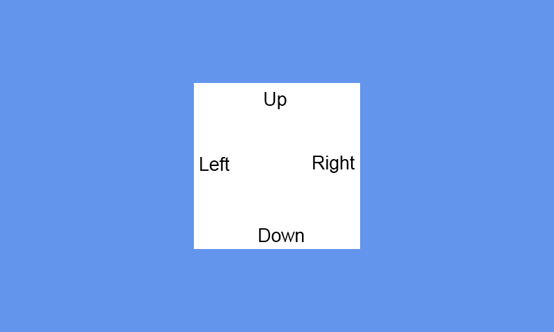

Orientation
Ported from Microsoft's XNA 4.0 Orientation Sample for Windows Phone.
Source for this sample on GitHub ↗

Play ▸Opens in a new tab. The supplied landscape scenario displays a static guide; clicking or rotating the browser does not change it.
About this sample
This tutorial demonstrates four ways to configure a Windows Phone game's screen orientation. The supplied scenario uses full resolution and the default landscape orientation, with a centered direction guide.
The original tutorial asks readers to edit the source to try the other configurations: portrait, half-resolution landscape with hardware scaling, or both orientations with tap-to-lock behavior. These are source configurations rather than modes selected in the running sample.
Controls
| Action | Control |
|---|---|
| Stop the sample | Gamepad Back, or close the game tab |
| Default landscape guide | No active touch or mouse action |